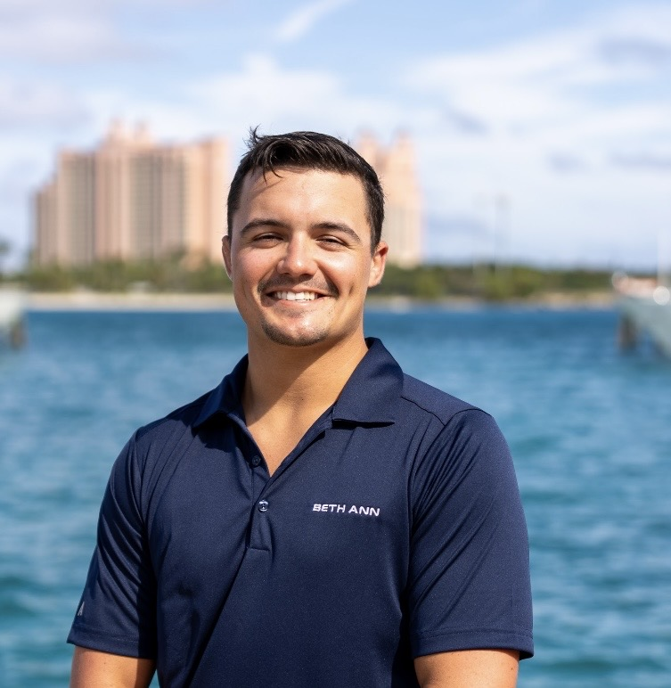
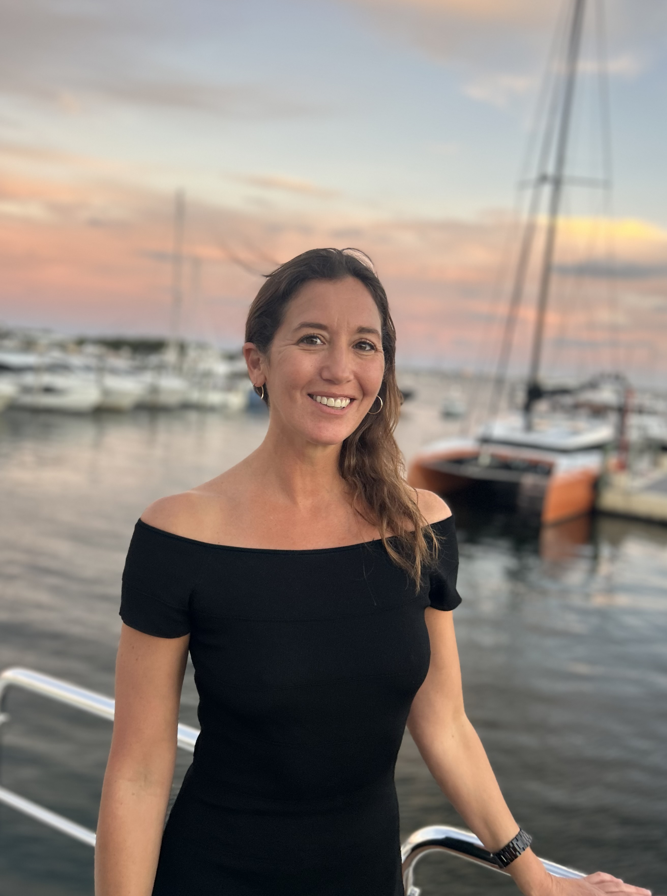

Michael Grauso
Michael has spent his career in the waters of Southeast Alaska, first as a commercial fisherman, then as a licensed captain running private expeditions through the Inside Passage. He knows these waters the way most people know their own neighborhood: the anchorages other boats never find, the tide windows that open narrow corridors to remote fjords, the signs that tell you where the halibut are holding before you drop a line.
His approach to captaining is low-key and direct. He briefs guests each morning on the day's plan, adapts to wind and weather without drama, and consistently puts people in front of wildlife, glaciers, and experiences that aren't on any printed itinerary.

Ari Briens
Ari trained in classical French technique before spending years cooking at farm-to-table restaurants where local sourcing wasn't a marketing tag. It was the job. On Oceana, that means fresh-caught halibut the same afternoon it comes off the line, Dungeness crab pulled from pots in the morning, and produce sourced from Juneau-area farms when the season allows.
Every meal is built around what's available and what guests want: dietary restrictions, preferences, and the occasional special occasion are all handled without fuss. There's no fixed menu. There's a galley, a skilled chef, and whatever Southeast Alaska provides that day.

Matthew Miller
Matt, born in Florida and raised in a military family, grew up with the water in his blood — his father was a captain in the Coast Guard. He started as a mate on fishing charter boats in the Chesapeake Bay, then launched his own commercial crabbing operation selling to local seafood markets in Maryland before entering the yachting industry.
With six years of experience as a mate and a lifelong angler, Matt knows the best spots for fishing, snorkeling, and every water activity the Bahamas and Caribbean have to offer. He brings that same instinct to Southeast Alaska: where to drop a line, how to read conditions, and how to make sure every guest gets the most out of the water. In his downtime, he surfs, wakeboards, dives, hunts, and fishes.

Lisa Cincotta
Lisa grew up near the water in Cape May, New Jersey, and has spent her life following the ocean around the globe. She's sailed the Bahamas, Cuba, Italy, Greece, Thailand, and Newport, and has explored destinations from Dubai and Sicily to Ireland, Scotland, and Southeast Asia. A certified rescue scuba diver and experienced sailor, she brings genuine expertise on the water along with the kind of warmth and adaptability that sets a charter apart.
Known for being friendly, reliable, and highly adaptable, Lisa runs the interior of Oceana with a global perspective shaped by decades of exposure to diverse cultures and hospitality standards. She's the reason every small detail is handled before guests notice it needs to be.